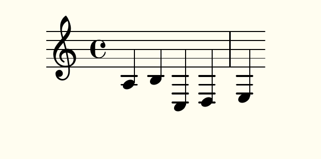
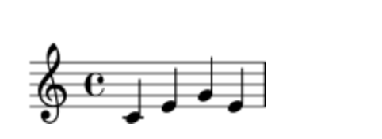
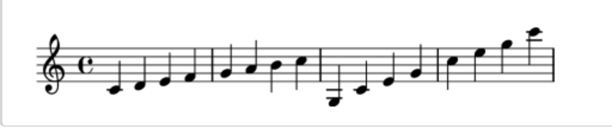
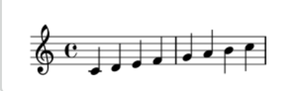
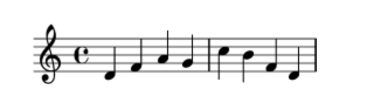
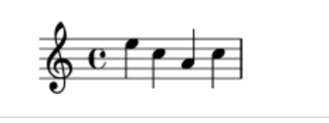
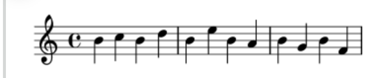
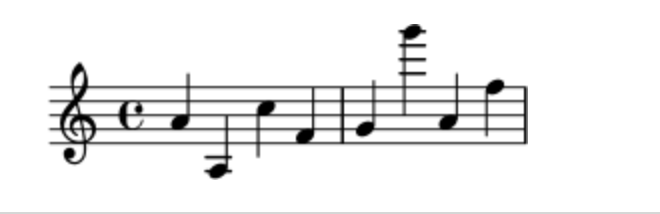

\relative {
c' d e f
g a b c
}Curso de edición y creación de partituras con Lilypond. Año académico 2022-2023.
Curso para la asignatura Nuevas Tecnologías, del Conservatorio Municipal de Música Reveriano Soutullo, para la creaación y edición de partituras con la herramienta de notación musical Lilypond basada en Python.
Introducción y primera partitura.
Tema I
LilyPond es un programa de tipografía musical o edición de partituras, consagrado a la producción de partituras de la calidad más alta posible. Lleva la estética de la música tipografiada de la forma tradicional a las partituras impresas mediante ordenador.
Historia de la tipografía musical
El arte de la tipografía musical recibe el nombre de grabado (en plancha), un término que deriva del proceso manual de la impresión musical. Los impresores europeos de la antigüedad exploraron diversos procesos, entre los que se incluían los bloques de madera tallados a mano, los tipos móviles y planchas finas de metal grabadas. La composición tipográfica tenía la ventaja de poderse corregir más fácilmente y facilitar la inclusión de textos y la letra de las canciones, pero sólo el grabado ofrecía la posibilidad de elaborar notación libre de compromisos y limitaciones anticipadas. Al final, las partituras grabadas a mano se convirtieron en el estándar de toda la música impresa, con la excepción de algunos himnarios y cancioneros en los que la composición tipográfica estaba justificada por su comodidad y economía, incluso bien entrado el s.XX.
Hace tan sólo unas décadas, las partituras se hacían cortando y estampando la música en una plancha de zinc o estaño en imagen invertida como en un espejo. La plancha se entintaba, y las depresiones producidas por el grabado y el estampado retenían la tinta. Se formaba una imagen presionando el papel contra la plancha. El cortado y estampado se hacía completamente a mano y era muy fastidioso hacer una corrección, por lo que el grabado había de ser casi perfecto a la primera. El grabado era una habilidad fuertemente especializada; un artesano tenía que cursar unos cinco años de entrenamiento antes de poder obtener el título de maestro grabador, y se necesitaban otros cinco años para adquirir una verdadera habilidad en el oficio. Fuente: página oficial Lilypond
Ventajas de usar Lilypond respecto a otros programas:
- Es gratis
- Es Open-Source
- Es multiplataforma
Beneficios de usar Lilypond
Las partituras se guardan en un simple archivo de texto .txt que puede ser editado con cualquier otro editor. - No tiene formatos propietarios - Puede editar partituras en cualquier lugar del mundo con cualquier dispositivo, y salvar los archivos del proyecto en DropBox, p. ej. y usarlos en cualquier editor de texto genérico
Lilypond usa la estética del antiguo grabado de música a mano tradicional.
Puede integrar extractos de partituras o partituras completas en una variedad de otros proyectyos, incluidos documentos Latex, artículos científicos, musicología y trabajos de investigación e incluso HTML.
La instalación del programa sólo ocupa 25 Mb en la memoria, a diferencia de otros editores convencionales de 1 Gb o más
Por último, Lilypond es gratis. ¿Qué se quiere decir con gratis? No sólo en un sentido material, es decir, no cuesta nada, no hay que comprarlo. Sino que además podemos ser completamente libres para usar, modificar, añadir, publicar, etc.. el programa y el uso que se haga de él.
Instalación
Lo primero que debemos hacer es descargar el programa. Abrimos el navegador y vamos a la página oficial de Lilypond
En la parte derecha de la ventana de la página veremos un menú de descarga donde se nos ofrece dos opciones para descargar, una estable y otra en desarrollo que es la más reciente. Escogemos esta segunda opción que que será sufucuente para lo que estamnos haciendo. Escogemos la opción de nuestro sistema operativo. Una vez descargada ejecutamos el programa por primera vez. Si parece no suceder nada, no entres en pánico. Esto es normal, está revisando las fuentes de tu sistema y una vez que finalice se abrirá. Obviamente este proceso será más rápido la próxima vez.
Cuando se abra Lilypond aparecerá una ventana emergente con un texto incorporado al editor de manera predeterminada. Seleccionamos todo el texto y lo eliminamos. A continuación lo salvamos en una carpeta previamente creada para nuestos proyectos.
La extensión por defecto del archivo guardado es .ly
Primera partitura
La primera declaración de la partitura debe ser la versión que estamos usando de Lilypond:
\version "2.23.14"
Esta declaración es importante entre otras cosas, porque si queremos correr la declaración con una versión anterior nos devolverá un mensaje de error que indicará que el programa es demasiado antiguo.
La siguiente parte de la partitura es la sección principal donde se colocará las articulaciones dinámicas de las notas musicales reales. Cuando se trabaja con Lilypond se debe pensar en la partitura como representada por expresiones musicales. Por ejemplo una sóla nota es una expresión musical. Para empezar a escribir notas lo primero que tenemos que hacer es escribir dos llaves donde se colocaran las notas en su interior:
{ }
Ejemplo:
{ a b c d e}
Si ejecutamos esta partitura sucederá que creaá dos archivos. Uno de registro, dónde se informará del proceso y de los errores si los hubiere y un segundo un PDF donde aparecerán las notas que hemos escrito entre llaves en un pentagrama, es decir nuestra partitura.

Lo que ha sucedido es que Lilypond además de escribir nuestras notas La,si,Do,Re y Mi, ha escrito otros elementos él sólo por nosotros. Cmo la clave, el compás las líneas del pentagrama y divisoria. Debe apreciarse que también por defecto nos ha proporcionado una duración de las notas que al ser cinco, distribuyó en 5 negras en dos compases. Cubriremos este aspecto en las próximas clases. Pero por ahora, acabas de crear tu primera partitura con Lilypond.
Compilación del archivo
Compilación es una palabra que significa procesar un texto de entrada en formato de LilyPond para producir un archivo que se puede imprimir y (de manera opcional) un archivo MIDI que se puede reproducir. El primer ejemplo muestra el aspecto de un sencillo archivo de texto de entrada.
Este ejemplo muestra un archivo de entrada sencillo:
\version "2.22.2"
{
c' e' g' e'
}
Cómo escribir archivos de entrada
Notación sencilla
Alturas
Glosario musical: pitch, interval, scale, middle C, octave, accidental.
LilyPond emplea letras minúsculas para las alturas. Los nombres de nota en todos los ejemplos de esta sección usan la nomenclatura holandesa, en que las teclas blancas del piano van desde la c (Do) hasta la b (Si). Sin embargo, LilyPond contempla muchos otros sistemas para los nombres de las notas, como el inglés o el ‘Do fijo’ (do-re-mi-…). Véase idiomas Nombres de las notas en otros idiomas. Las letras desde c hasta b denotan las alturas de las notas de la ‘octava corta’ por debajo del Do central. Los sufijos ’ (apóstrofo) o , (coma) se añaden para indicar octavas más agudas o más graves. A continuación se muestra una escala que comienza en el Do central, y un arpegio:
{ c’ d’ e’ f’ g’ a’ b’ c’’ g c’ e’ g’ c’’ e’’ g’’ c’’’ }

La manera más sencilla de introducir las notas es mediante la utilización del modo (relativo). En este modo, se elige la octava automáticamente bajo la suposición de que la siguiente nota se colocará siempre lo más cerca de la nota actual, es decir, se colocará en la octava comprendida dentro de hasta tres espacios de pentagrama a partir de la nota anterior. Comenzaremos por introducir el fragmento musical más elemental: una escala, donde cada nota está comprendida dentro de tan sólo un espacio de pentagrama desde la nota anterior.

La nota inicial, escrita como c’, es el Do central. Cada nota sucesiva se coloca lo más cerca posible de la nota previa (en otras palabras: la primera ‘c’ es el Do más cercano al Do central; a éste le sigue el Re más cercano a la nota previa, y así sucesivamente). Podemos crear melodías con intervalos mayores, aún sin dejar de utilizar el modo relativo:
\relative {
d' f a g
c b f d
}
En el ejemplo anterior, la primera nota (d’, con un apóstrofo) es el Re que está en la octava que va del Do central al Si por encima de él.
Añadiendo (o eliminando) comillas simples ’ o comas , a la primera nota, podemos cambiar la octava de inicio:
\relative {
e'' c a c
}
Al principio, el modo relativo puede resultar algo confuso, pero es la forma más sencilla de introducir la mayor parte de las melodías. Veamos cómo funciona en la práctica este cálculo relativo. Comenzando por Si, que está situado en la línea central en clave de Sol, podemos alcanzar Do, Re y Mi dentro de los tres espacios de pentagrama hacia arriba, y La, Sol y Fa dentro de los tres espacios hacia abajo. Por tanto, si la nota siguiente a Si es Do, Re o Mi se supondrá que está por encima del Si, mientras que La, Sol o Fa se entenderán situados por debajo.
\relative {
b' c % el Do está un espacio por encima, es el Do de arriba
b d % el Re está dos por encima ó 5 por debajo, es el Re de arriba
b e % el Mi está 3 por encima ó 4 por debajo, es el Mi de arriba
b a % el La está 6 por encima ó 1 por debajo, es el La de abajo
b g % el Sol está 5 por encima ó 2 por debajo, es el Sol de abajo
b f % el Fa está 4 por encima ó 3 por debajo, es el Fa de abajo
}
Lo mismo exactamente ocurre cuando cualquiera de esas notas llevan un sostenido o un bemol. Las Alteraciones accidentales se ignoran totalmente en el cálculo de la posición relativa. Exactamente la misma cuenta de espacios de pentagrama se hace a partir de una nota situada en cualquier otro lugar del mismo.
Para añadir intervalos mayores de tres espacios de pentagrama, podemos elevar la octava añadiendo una comilla simple ’ (o apóstrofo) a continuación del nombre de la nota. También podemos bajar la octava escribiendo una coma , a continuación del nombre de la nota.
\relative {
a' a, c' f,
g g'' a,, f'
}
Para subir o bajar una nota en dos (¡o más!) octavas, utilizamos varias ’’ ó ,, (pero tenga cuidado de utilizar dos comillas simples ’’ ¡y no una comilla doble ” !)
Duraciones
Glosario musical: beam, duration, whole note, half note, quarter note, dotted note.
La duración de una nota se especifica mediante un número después del nombre de la nota: 1 significa redonda, 2 significa blanca, 4 significa negra y así sucesivamente. Las barras de corchea se añaden automáticamente.
Si no especifica una duración, se utiliza la duración previa para la nota siguiente. La figura por omisión de la primera nota es una negra.
\relative {
a'1
a2 a4 a8 a
a16 a a a a32 a a a a64 a a a a a a a a2
}Para crear notas con puntillo, añada un punto . al número de la duración. La duración de una nota con puntillo se debe especificar de forma explícita (es decir: mediante un número).
\relative {
a'4 a a4. a8
a8. a16 a a8. a8 a4.
}